Project 3B: IMAGE WARPING and MOSAICING
This project explores image warping and mosaicing techniques. I implement image warping and mosaicing techniques.
Part B: FEATURE MATCHING for AUTOSTITCHING
In Part B, I implement automatic feature detection and matching to create image mosaics without manual point correspondence selection. This approach follows the paper "Multi-Image Matching using Multi-Scale Oriented Patches" by Brown et al., with some simplifications.
B.1: Harris Corner Detection
Deliverables: Show detected corners overlaid on image, with and without ANMS.
Corner Detection Results Comparison
1. All Detected Harris Corners
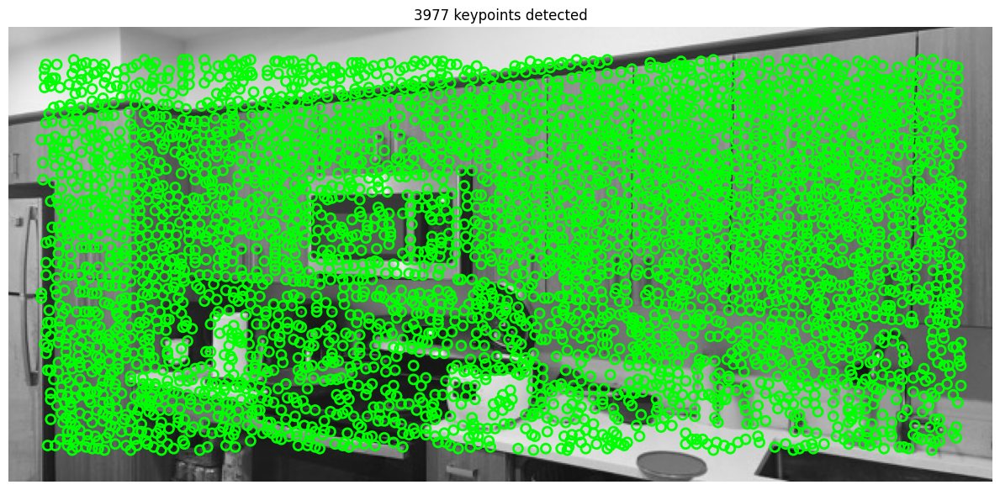
All Harris corners detected using corner response threshold.
2. Top-k Corners by Strength (Naive Selection)
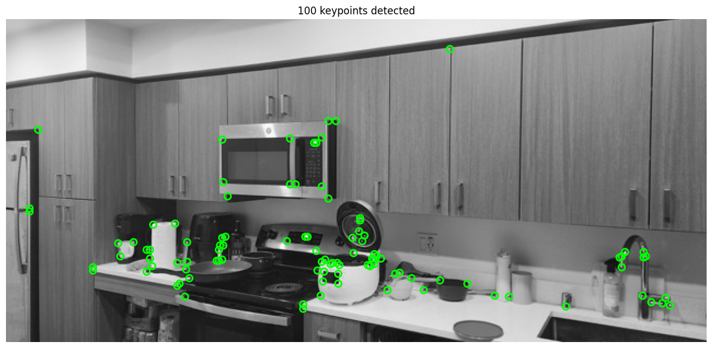
Top k corners selected by corner response strength. This naive approach results in clustered features concentrated in high-contrast areas, leading to poor spatial distribution across the image.
3. ANMS-Selected Corners (k corners)
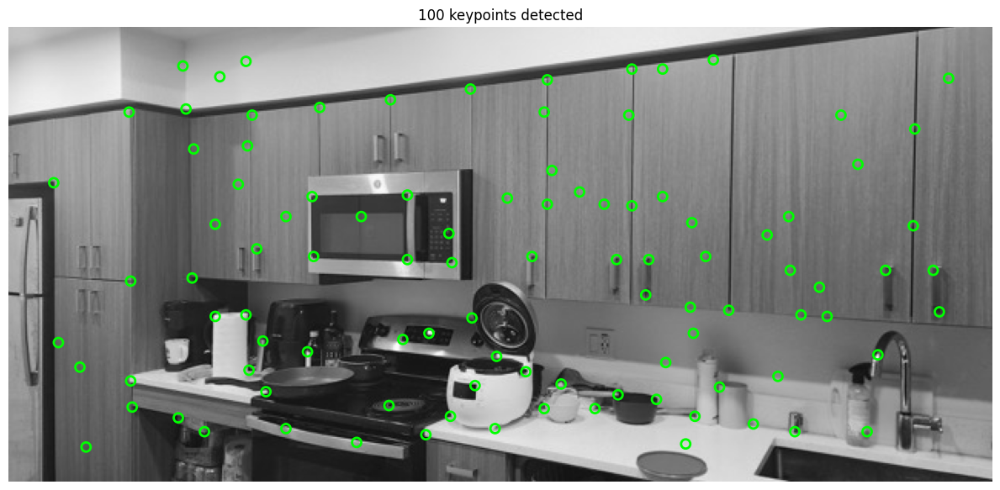
k corners selected using Adaptive Non-Maximal Suppression (ANMS). ANMS ensures well-distributed features across the entire image by selecting corners with large suppression radii, resulting in better coverage and more robust matching.
ANMS Algorithm Details
The Adaptive Non-Maximal Suppression (ANMS) algorithm addresses the clustering problem in naive strength-based selection by ensuring spatial distribution of selected features. The algorithm works as follows:
Algorithm Steps:
- Compute suppression radius for each corner: For each detected corner $i$ with strength $f_i$, compute the minimum distance to any significantly stronger corner:
$$r_i = \min_{j} \|p_i - p_j\| \quad \text{subject to } f_j > c_{\text{robust}} \cdot f_i$$
where $c_{\text{robust}}$ is a robustness coefficient (typically 0.9), and $\|p_i - p_j\|$ is the Euclidean distance between corners.
- Sort by suppression radius: Rank all corners in descending order of their suppression radius $r_i$. Corners with larger radii are more spatially isolated from stronger features.
- Select top-k corners: Choose the top $k$ corners with the largest suppression radii. These corners are both strong and well-distributed across the image.
Intuition
The suppression radius $r_i$ measures how "unique" a corner is in its local neighborhood. A large radius means the corner is the strongest feature in a large surrounding area, making it a good representative feature point. By selecting corners with large radii, ANMS automatically achieves good spatial coverage while maintaining feature quality.
Key Parameters
- $c_{\text{robust}}$ (robustness coefficient): Controls the threshold for "significantly stronger." Typical value: 0.9
- $k$ (number of features): Number of corners to retain. Typical values: 100-500 depending on image size and application
B.2: Feature Descriptor Extraction
Descriptor Extraction Process
- Extract 40×40 window: Sample a large window centered at the corner point
- Gaussian blur (optional): Apply Gaussian smoothing to the 40×40 window for robustness
- Downsample to 8×8: Subsample the blurred window to create the 8×8 descriptor
- Bias/gain normalization: Normalize the descriptor to zero mean and unit variance:
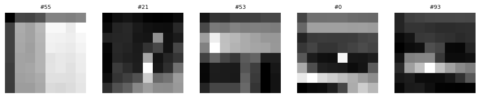
Sample of extracted 8×8 feature descriptors from detected corners
Why ANMS is Better
Comparing the three approaches above:
- All corners: Too many features, computationally expensive, includes weak/noisy corners
- Strength-based top-k: Features cluster in high-contrast regions, leaving large areas uncovered
- ANMS top-k: Optimal spatial distribution ensures features spread across the entire image, improving matching robustness and reducing mismatches
B.3 Feature Matches
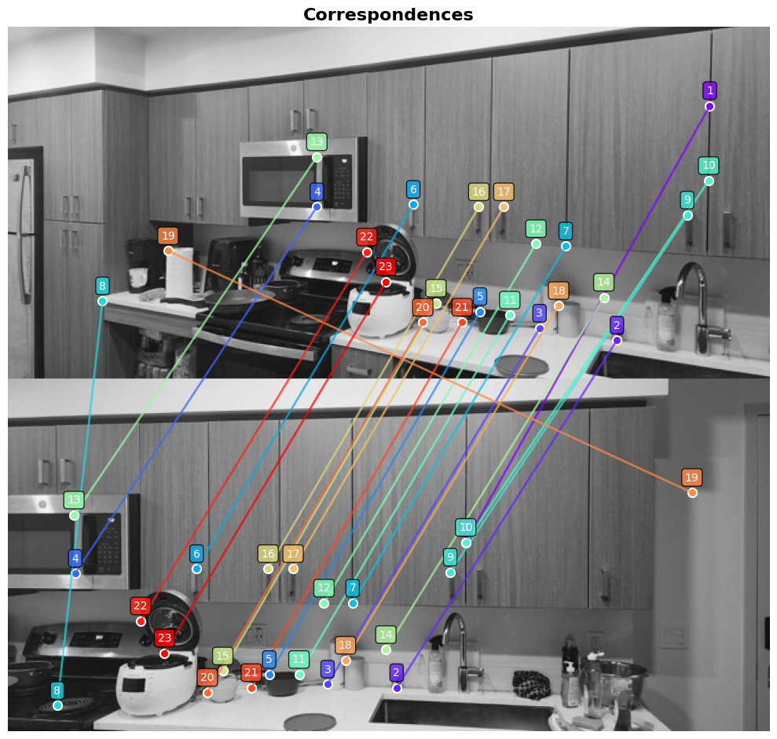
Matched features between kitchen images 1 and 2 (threshold=0.7)
B.4: RANSAC for Robust Homography
Deliverables: Implement 4-point RANSAC from scratch. Show comparison of stitching manually and automatically. Create ≥3 automatic mosaics.
Implementation
I implemented 4-point RANSAC to compute robust homography estimates from potentially noisy feature matches. The algorithm iteratively samples random subsets of matches and finds the homography with the most inlier support.
RANSAC Algorithm
- Random sampling: Randomly select 4 feature correspondences
- Compute homography: Use the 4 points to compute a homography matrix H
- Count inliers: For all feature matches, count how many are consistent with H (within distance threshold ε)
- Update best model: If this H has more inliers than the current best, save it
- Iterate: Repeat steps 1-4 for N iterations
- Refit: Estimate H using all inliers from the best model
Results for Three Image Sets
Below are the complete automatic stitching results for each of the three image sets, showing the feature matching and RANSAC inliers, followed by the final stitched panorama.
Image Set 1: Kitchen
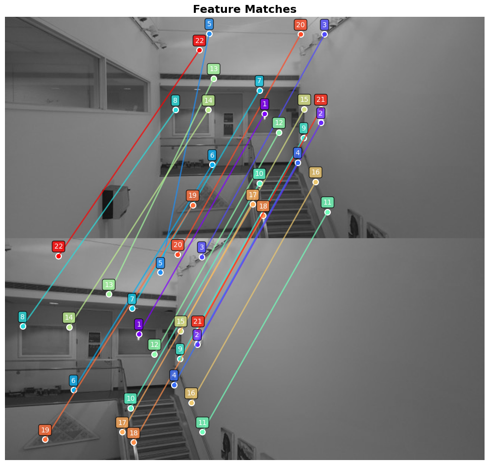
Feature Matches
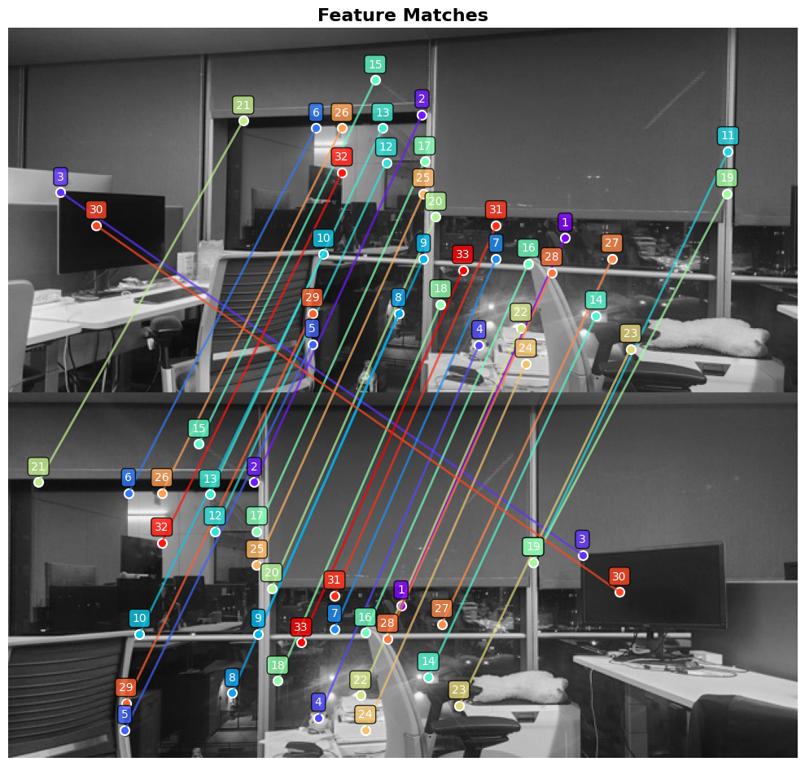
Matched Features
Complete automatic stitching pipeline for Kitchen images: Feature matching → RANSAC filtering → Final panorama
B.5: Bells & Whistles (CS280A)
For the CS280A requirement, I implemented [choose one of the following and describe your implementation]:
Multiscale Processing Implementation
I implemented multiscale Harris corner detection and feature descriptor extraction to improve robustness and handle features at different spatial scales. This allows the algorithm to detect both fine-grained details and larger structural features in the image.
Implementation Details
The multiscale Harris corner detection works as follows:
- Image stack construction: Create an image stack by progressively downsampling the input image. I used 3 scale levels
- Corner detection at each scale: Apply Harris corner detection independently at each scale level to capture features of different sizes.
- Scale-aware ANMS: Apply ANMS at each scale to select well-distributed corners, ensuring feature coverage across different scales.
- Multiscale feature descriptors: Extract 8×8 descriptors from the appropriately scaled 40×40 windows at each pyramid level.
- Feature aggregation: Combine features from all scales, storing both the descriptor and its scale information for robust matching.
Multiscale Corner Detection Results
Below are the Harris corners detected at three different scale levels. Notice how different scales capture different types of features:

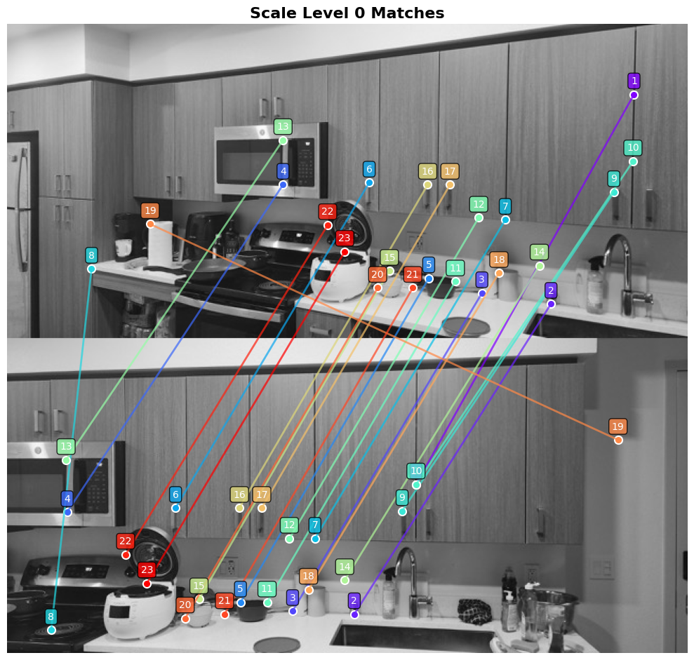
Scale Level 0
Fine-grained features and small details
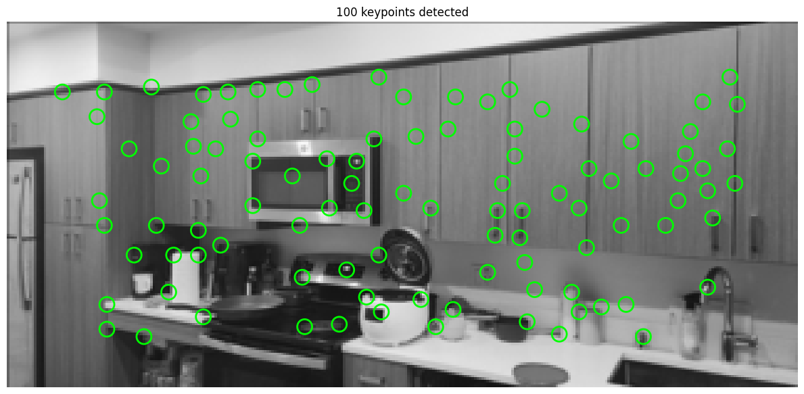
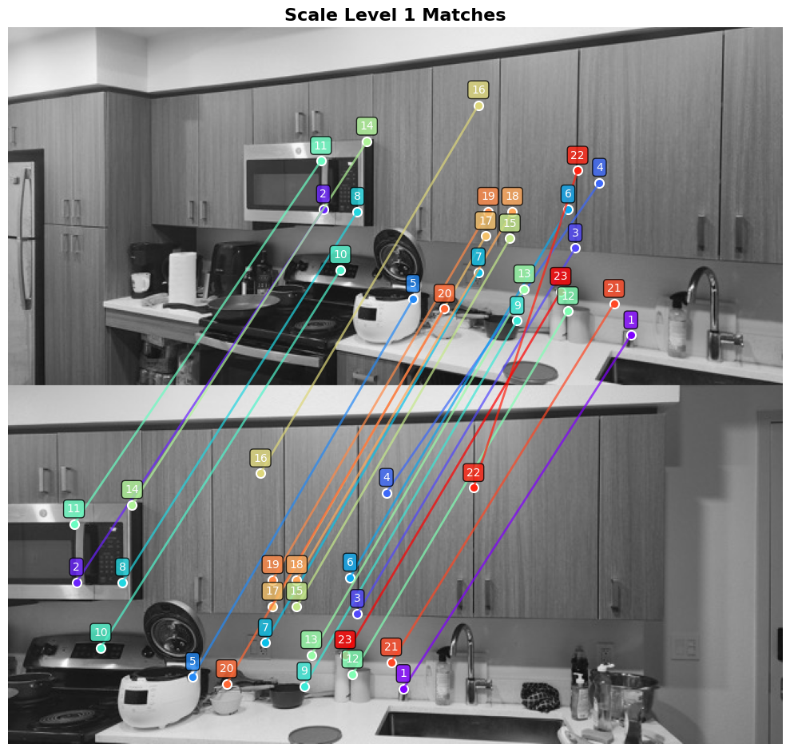
Scale Level 1
Medium-scale structural features
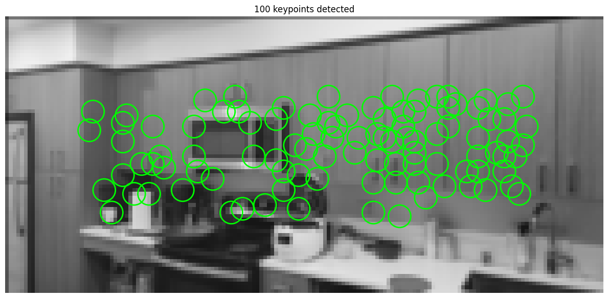
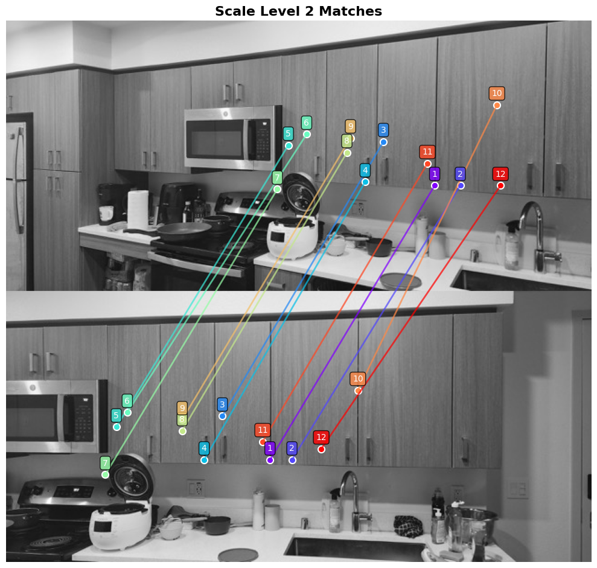
Scale Level 2
Coarse-scale prominent structures
Each scale level shows corner detection results (top) and feature matching results (bottom). Different scales capture features at different spatial frequencies.
Improved Robustness with Multiscale Matching
The multiscale approach significantly improves matching robustness compared to single-scale feature detection. By detecting features at multiple scales, the algorithm can handle:
- Noise resilience: Coarser scales naturally filter out high-frequency noise
- Feature diversity: Captures both fine details (edges, corners) and large structures (building outlines, major objects)
- Matching stability: More features across scales increase the likelihood of finding reliable correspondences
Multiscale Matching Results
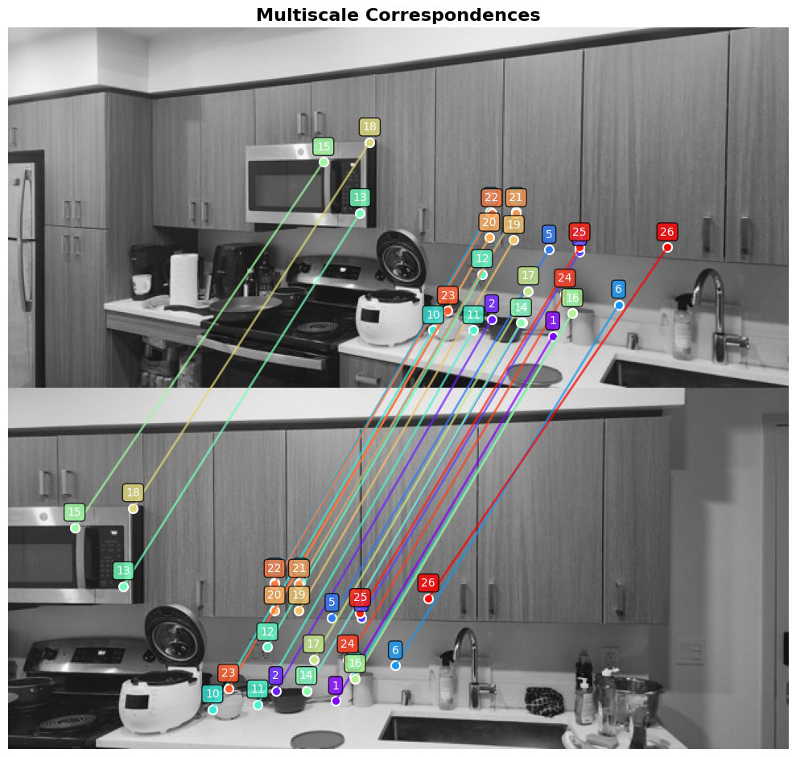
Robust feature matching using multiscale descriptors. The multiscale approach produces more reliable matches across images with scale variations, resulting in stronger geometric consistency.